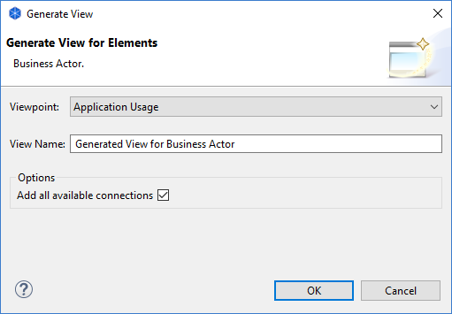

从元素生成视图
您可以从所选ArchiMate元素生成新的图视图。选定的 ArchiMate元素然后成为新生成的视图的焦点。与所选元素相关的任何 ArchiMate元素也将与任何连接一起添加到生成的视图中。
此功能允许您专门为一个或多个相关的ArchiMate元素快速创建新的视图和视点。
要从所选元素生成新视图：
- 确保您已在模型树或图视图中选择了一个或多个ArchiMate元素。
- 从右键单击上下文菜单或从主“工具”菜单中选择“生成视图...”选项。
- 在对话框窗口中，选择生成的视图的目标视点。可用视点的列表由所选元素确定，以及它们是否在视点中被允许。另请注意，与目标视点中不允许的所选元素相关的元素将不会包含在生成的视图中。如果要在目标视图中包含所有相关元素 ，或者如果不确定 ，请选择 “无”视点。如果您愿意 ，您可以稍后更改视点。
- 如果需要，请更改生成的视图的名称。
- （可选）选中“添加所有可用连接”。如果选中此选项， 所有 元素之间的连接被添加到生成的视图中。如果未选中，则仅将与所选元素直接相关的连接添加到生成的视图中。
- 点击 OK键，

生成视图对话框
将创建一个包含所选元素及其连接的新视图。